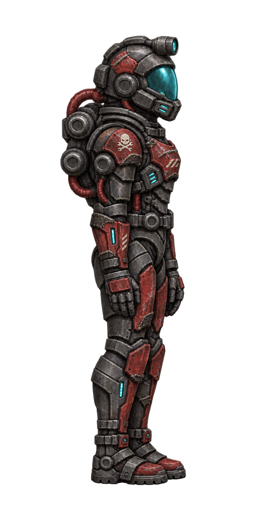
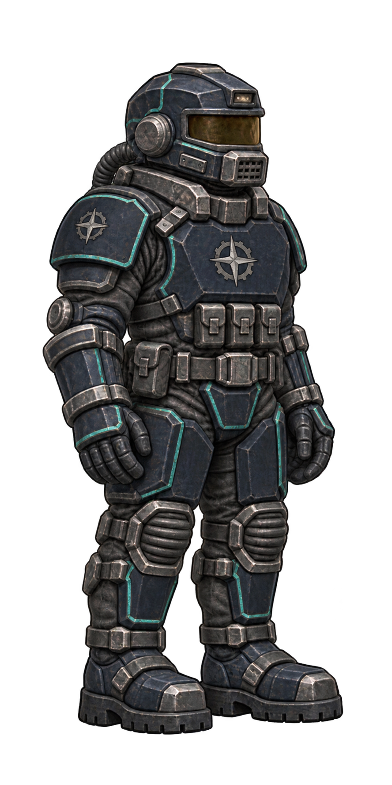

Czerwone płyty z nitami, mosiężny iluminator z kratą, zewnętrzne węże i czaszka z kluczami.
Descendens
Ceramika ekspedycyjna

Gładkie białe osłony, szeroka fasetowana szyba w kobalcie i turkusowe szewrony.

Granatowe płyty abordażowe z białymi pasami, bursztynowy wizjer i znak Koalicji z gry na pancerzu.
Separatyści
Kombinezon górniczy

Pomarańczowe osłony przemysłowe, trzy okrągłe wizjery, uchwyty i żółto-czarne pasy.
Kościół Łuski
Pancerz ceremonialny

Fioletowy kaptur hełmu, żebrowane płyty w kolorze kości, wąski wizjer i zwijający się znak kultu.
Dzieci Honkomatki
Pancerz karnawałowy

Biała maska z czerwonym nosem i uśmiechem, hełm z dzwonkami, szachownica i paski na rękawach.